lab 5 : analog output
This lab was completed on March 6, 2023.
Overview
In this lab, I learned how to use analog outputs through the Arduino. I created complex output from the Arduino visually and auditorily.
Materials
The materials used for this lab were:
↠ Arduino (Elegoo) Uno R3 Controller Board
↠ USB Cable
↠ USB Adapter (if you have a USB-C-only laptop)
↠ Breadboard Jumper Wire
↠ Resistors
↠ RGB LEDs
↠ Passive Buzzer
↠ Joystick Module
↠ Multimeter
Part 1: Wiring Up the RGB LED
In the first part of this lab, I needed to connected to RGB LED to the Arduino. The RGB LED is a red, green, and blue LED put together into one LED. The LED has 4 pins instead of 2 on the usual LEDs. For each pin, a 220 ohm resistor implementation would be appropriate. The four pins stand for ground, red, green and blue.
In order to display different colors, I used Pulse Width Modulation (PWM), which allows me to control the power output from the Arduino, and then can be used to control the brightness of a normal LED. Being able to control the different LEDs within an RGB LED therefore can allow control of the overall color. For this, I used RGB codes to program the change in color, using analogWrite().
Below is the circuit that was used to connect the RGB LED. The RGB LED is lit up as a white color.
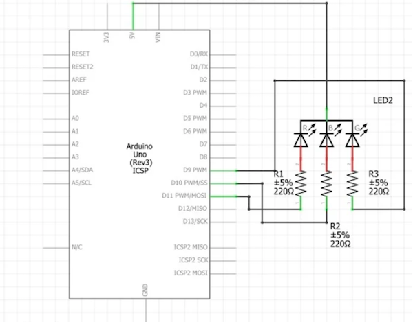
values: 255, 255, 255
Next, I created a purple LED color.

values: 102, 0, 204
Then, I lit up the RGB LED pink.

values: 204, 0, 102
Lastly, I lit up the RGB LED blue.

values: 27, 54, 97
Part 2: Dynamic Color Change with Joystick
In order to manipulate the color on the LED, I used the analog joystick to change the colors being produced on the RGB LED. I connected the joystick to the Arduino, and mapped the x values and y values to two of the three colors in the RGB color space.
I created a map where the x values manipulated the red brightness and the y values manipulated the blue values, and green was manipulated by a random value between 0 - 255.
Part 3: Musical Notes with Passive Buzzer
In part three of this lab, I learned how to create different forms of analog output using sound. My arduino has the capability of producing sound through piezo buzzers. For this lab, I used a passive buzzer (which can produce different frequencies), rather than active buzzers (which can only produce one frequency).
Buzzers have polarity, meaning that their positive pin can only be connected to a positive terminal, and the negative pin can only be connected to a negative terminal. If you were to connect this incorrectly, the buzzer could be damaged permanently.
Below is a photo of my circuit that is properly wired.

In order to produce sound from the buzzer, I used the tone() function, which takes two arguments, pin and freq. Freq is the frequency and pin is the digital pin that the buzzer is connected from. We can also have the argument dur, which is the duration in milliseconds that the sound should play for.
The mininum frequency that can be played by tone() is 31hz. We can also use the noTone() function, which stops the tone playing on the buzzer.
I created a program that plays a beep of frequency (440hz) on the buzzer for one second, and then pause for one second, and then plays the beep again.
After this had been accomplished, we can change the frequency to match the frequency of musical notes played by a piano. For example, A4 is 440 hz. In order to determine which frequencies are being played, we used #includes to include a pitches file, which is detailed below. Additionally, I included below a sketch of the same beep but the frequency matches B3 on the piano.

Part 4: Melody from the Buzzer
After I was able to play individual musical notes on my buzzer, I could program a code to create a melody. After a brief review of music theory (notes, durations, rests, etc.), I created variables that determined the durations of each note that could be played. I created pauses between notes with the function delay(), and could stop the note being played using the function noTone().
In the lab, we were given a melody to play, which the code and video of is included below.
Then, I created my own melody. I picked "I See the Light" from Tangled. Below is the table of notes that I used, my code, and a video of it working.
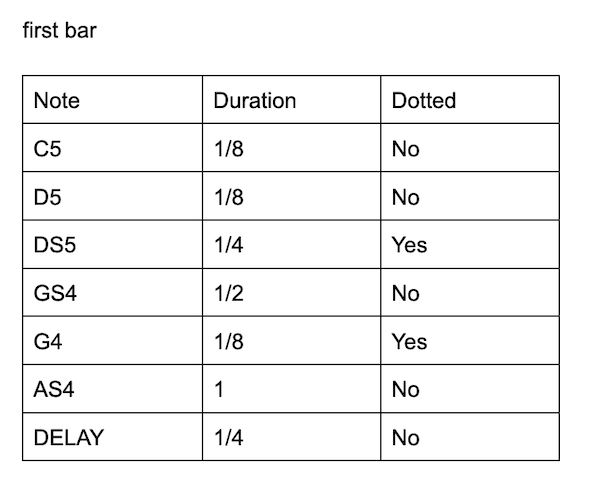 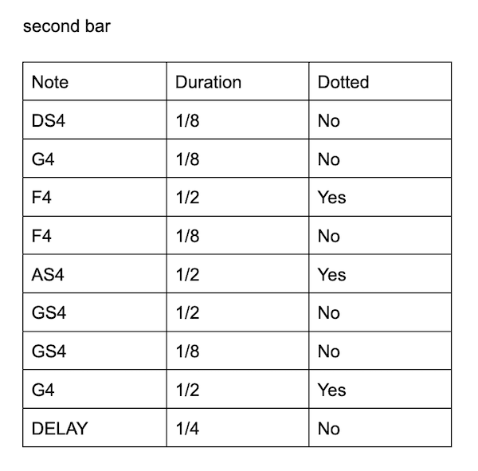 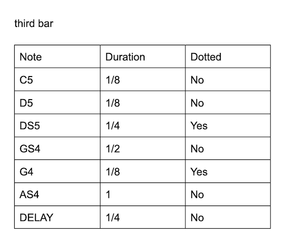 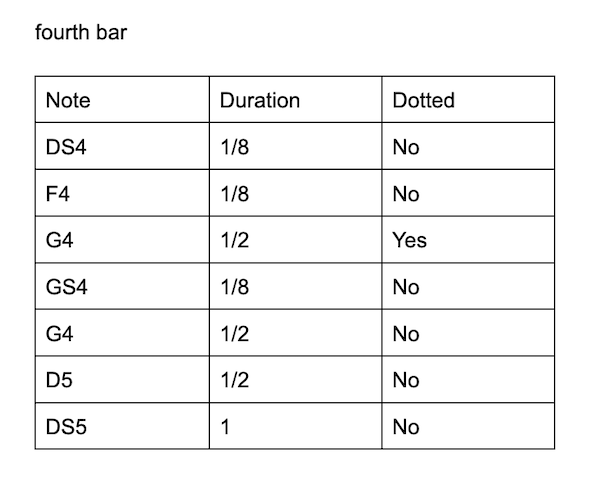 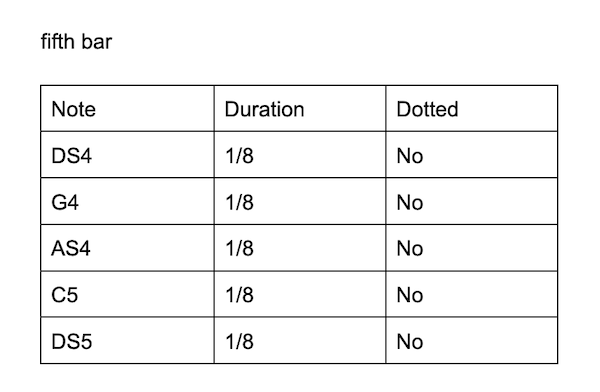 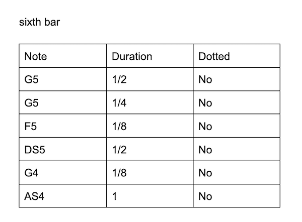 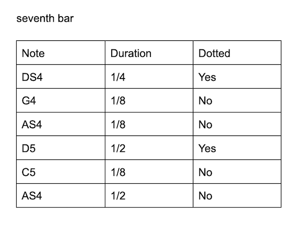 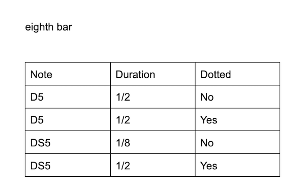 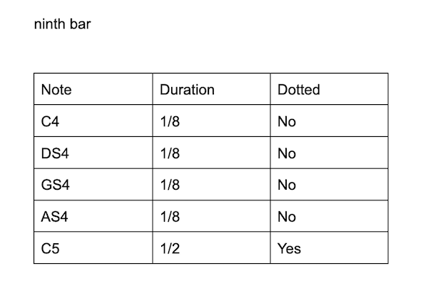 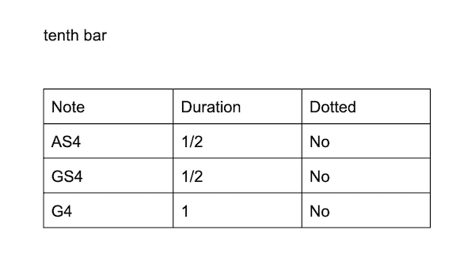 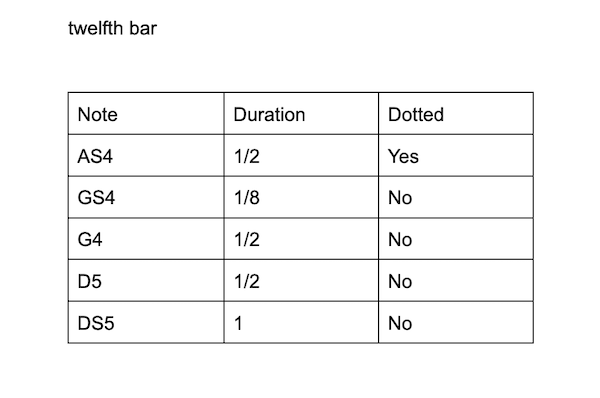
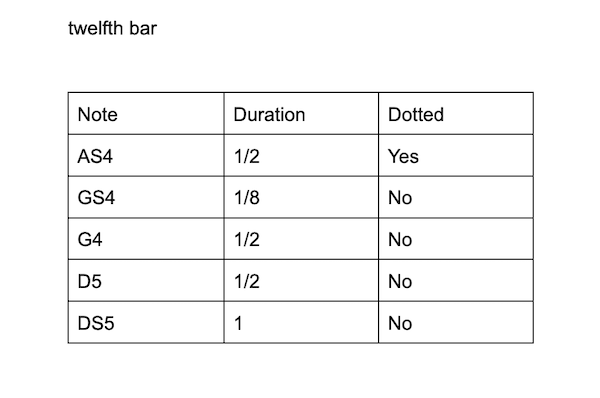
Extra Volt
For the extra volt, I created an audio-reactive LED visualization for my melody. In order to create my audio visualizer, I mapped the melody notes to colors to create it. The colors depended on how long the notes playing were. For example, I have eighth notes as red values of 199, random green value, and blue is 133. For half notes, red is 199, green is 133, and blue is random. For quarter notes, red is random, green is 100 and blue is 255. Otherwise, red is 100, green is random, and blue is random. If noTone is playing, red is 199, green is 133, and blue is 21.
Below is the code for the audio visualizer playing the given melody.
Below is the code for the audio visualizer playing my melody, "I See the Light" from Tangled.
Conclusion and Reflection
I really enjoyed this lab, as it was my favorite so far. I was really inspired by the extra volt portion, and would love to use it as inspiration for my final project in this class. I struggled a bit with the extra volt until I finally figured it out, and I felt pretty accomplished.